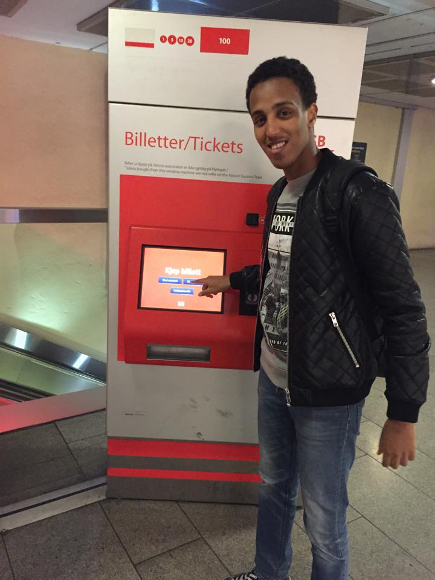

Airport ticket vending machine

You just got off your flight and the airport is stacked with people. Everyone wants the same thing, to get home. It’s a stressed and crowded environment, and instead of getting the expensive cab home you decide on the train. The queues are long, and people are trying to get done fast. You’re standing in front of this monster of a touchscreen with a lot of noise and loud people in the background. The old Nokia in your pocket haven’t exactly turned you into a tech-god, but how hard can it be? After ten hard minutes of making your way through the purchase you finally fetch your ticket and can get on the way to the train. The feel of being the dinosaur in the room is still lingering as the train runs out of the station.
- INTERFACE
- Tourist wishing to buy a ticket and doesn’t know either English or Norwegian would have a bad time navigating on the NSB train ticket vending machine. The interface should include more typical tourists’ language, such as French, German, and different Asian languages.
- The older generation are used to physical interfaces, we are not saying the interface should only be physical, but the feeling should be. The interface is already including the physical feeling with “push in” – animation. But when combining the environment factors with for example bad eye sight the contrast with active and ready buttons should be greater.
- The environment limits the hearing, and if you already have bad eye sight or reading disabilities, the stress level is a bit high. With screen reader and sound coming from an optional headset, you are in your own zone when buying a ticket. You get the help and information read to you, and the ticket buying experience would be easier and more comfortable for everyone.